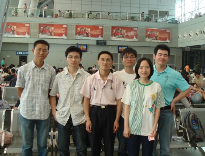

五林路上--记江苏五子棋首次组队参加全团赛(2)
#1 五林路上--记江苏五子棋首次组队参加全团赛(2)作者：小丸.net 发表时间：2008-6-17 14:21:47
第二篇 各路军相汇石门掌门议初掀波涛
终于等到了６月５号，上午１０点，我首先出发，安照行程计划，我先前往无锡与陈靖汇合，然后乘坐D424前往南京，并且在火车上与傅亮汇合。当在火车站前看到陈靖和在火车上看到傅亮时，看到他们是多么年轻，感觉自己一下子老了Ｎ岁，虽然只比他们大３－５岁，但这种感觉还真是有的。一路上说笑，一个小时的工夫就到了南京，感觉现在的交通好发达啊，整个江苏只是一个四小时的生活圈，也就是说，一天２４小时，你坐火车可以转三圈。这要在Ｎ年前，就是从无锡开车到上海也需要一天一夜。
废话说多了，来了到约定的地点――南京车站左侧的ＫＦＣ门口，这时郑勇，赵敏和王烨林陆续的赶来。我们一起去车站附近的超市里买些路上吃的东西，居然那装东西的袋子还要３块钱一个，真后悔没有在家里多带一些来。
我们在车站里留了影。

#2 Re:五林路上--记江苏五子棋首次组队参加全团赛(2)作者：lfzxdh 发表时间：2008-6-18 9:27:43
“我们迫不及待的进行洗澡” 还有走了5公里才找到饭馆 haha~~
还有走了5公里才找到饭馆 haha~~#3 Re:Re:五林路上--记江苏五子棋首次组队参加全团赛(2)作者：百医天使 发表时间：2008-6-18 15:07:11
引用：丸子有点儿夸张了，可能不到五公里，差不多也就是出租车起步价吧。
原文由 lfzxdh 发表于 2008-6-18 9:27:43 :
“我们迫不及待的进行洗澡”
#4 Re:五林路上--记江苏五子棋首次组队参加全团赛(2)作者：屏蔽 发表时间：2008-6-18 19:48:47
昨天搞了半天也没看出来17反向是个什么状况……
#5 Re:五林路上--记江苏五子棋首次组队参加全团赛(2)作者：江南新绿 发表时间：2008-6-18 21:35:46
如图,18走3右下,白必胜 ,屏蔽这个都被骗了.....:)
#6 Re:Re:五林路上--记江苏五子棋首次组队参加全团赛(2)作者：小丸.net 发表时间：2008-6-18 21:51:16
引用：
原文由 屏蔽 发表于 2008-6-18 19:48:47 :
昨天搞了半天也没看出来17反向是个什么状况……啊啊,是我图发错了,上图年17是必败的,正解17应该防下面~~~~~
#7 Re:五林路上--记江苏五子棋首次组队参加全团赛(2)作者：屏蔽 发表时间：2008-6-18 22:21:52
……一个字，
昨天晚上挺晚的了，根本没来得及思考原变化，嘿嘿~
#8 Re:五林路上--记江苏五子棋首次组队参加全团赛(2)作者：松痕 发表时间：2008-6-19 9:20:03
黑１７没人会如图防守吧#9 Re:五林路上--记江苏五子棋首次组队参加全团赛(2)作者：南京小飞机 发表时间：2008-7-16 11:55:57
丸子好样的
#10 Re:五林路上--记江苏五子棋首次组队参加全团赛(2)作者：南京小飞机 发表时间：2008-8-13 14:55:48
有点怀念~~